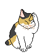
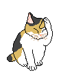

Para
mi hija adoptiva Lucila Fernández Lázaro
Para
mi hija adoptiva Lucila Fernández Lázaro

Cuenta la leyenda que, cada año en la fiesta de San Juan, un joven escogido a sorteo entre los de la ciudad de Coria era corrido por los vecinos por las calles de ciudad y se defendía con dos navajas o puñales de los ataques de los demás. El joven casi siempre solía morir. Hasta que un año le tocó en suerte al hijo de una rica dama del pueblo, quien angustiada pidió que en lugar de correr a su hijo corrieran a un toro. Desde entonces este cruel encierro es el centro de la fiesta de San Juan en Coria.
Actualmente, el toro deambula por el pueblo durante horas y recibe en sus carnes los dardos que le arrojan los vecinos del pueblo con sus cerbatanas. Cuando su agotamiento le vence y se acuesta, los mas aguerridos mozos del lugar le cortan los testículos mientras el toro agoniza.
Quien no ha escuchado alguna vez la expresión: ”eres mas tonto que Coria”, realmente no entendía el motivo de utilizar a un tranquilo pueblo de la provincia de Cáceres como medida de la idiotez de alguien. Claro que ahora lo entiendo cuando pienso en la forma que tienen por costumbre divertirse en la fiesta de San Juan .
El pobre San Juan debe de llorar lagrimas de sangre al ver la forma en que los Caurienses festejan su Santo. Normalmente los pueblos donde celebramos San Juan, que somos muchos, encendemos una hoguera, celebramos pequeñas funciones de teatro, nos bañamos en el mar, en fin cosas normales donde la finalidad que se persigue es pasarlo bien sin hacer mal a nadie.
Ciudad de Coria , por Dios bendito, dejad atrás esos actos tan primitivos. No utilicéis para divertiros a un pobre torito que no os ha hecho nada, y así, puede que en un próximo futuro se diga: "Eres mas listo que Coria".
Relato anteriorRelato siguiente
Página
Principal Volver al Índice
Volver al Índice